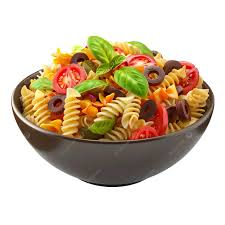

Home
Summer Pasta Salad

This is a summer noodle salad that my mom makes. It's even better the day after.
Ingredients
- 1 pound rotini/corkscrew pasta
- 1 red bell pepper, chopped
- 1 small zucchini, sliced
- 1 small red onion, chopped
- ½ pound salami, cut into strips
- ½ pound pepperoni, each piece cut into 4
- ½ pound mozzarella cheese, cut into strips
- 1 (6 ounce) can artichoke hearts, drained
- 1 (2 ounce) can sliced black olives
- ¼ cup chopped fresh broccoli
- 2 cups Italian-style salad dressing, divided
- ¼ cup grated Parmesan cheese
- 2 tablespoons chopped fresh parsley
- 1 clove garlic, chopped
- salt and pepper to taste
- 1 tomato, quartered
Steps
- Bring a large pot of lightly salted water to a boil. Add rotini pasta and cook until tender yet firm to the bite, 8 to 10 minutes; drain and rinse under cold water.
- Combine cooked pasta, red pepper, zucchini, onion, salami, pepperoni, mozzarella cheese, artichoke hearts, olives, and broccoli in a large serving bowl. Pour in 1 cup dressing and mix until well combined. Cover and chill in the refrigerator until ready to serve.
- Right before serving, toss pasta salad with remaining 1 cup dressing, Parmesan cheese, parsley, garlic, salt, and pepper until well combined. Garnish with tomato wedges